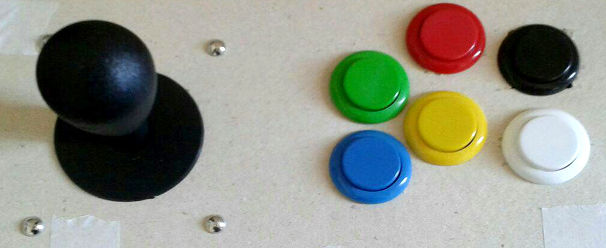
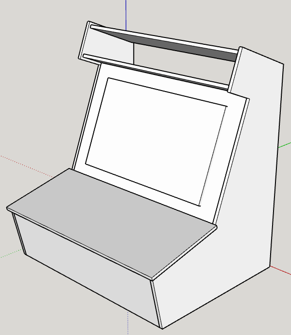
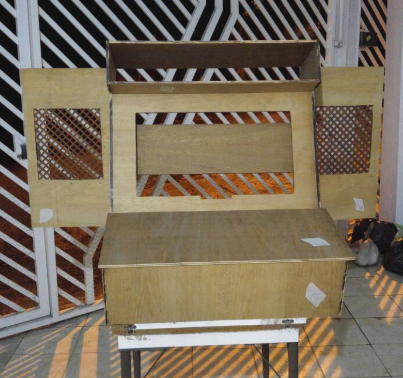

Atualizado em: 07/06/17, 13h.
Infos e downloads para o Arcade dos alunos de Jogos Digitais da PUC-Campinas. Dúvidas, envie email aqui.
A tela do arcade terá resolução de 1920 x 1080 pixels (FullHD).
Existe um namespace para o projeto chamado ArcadePUCCampinas que está reservado ao funcionamento do input e do gerenciamento dos jogos. Não deve ser alterado, assim como a parte de InputManager nos ProjectSettings.
Aqui está um exemplo de integração de input em jogo de nave. Olhe em particular a classe Nave.
InputManager.asset para a pasta ProjectSettings de seu projeto, substituindo o que está lá.InputArcade.unitypackage no seu projeto.ArcadeJogo na sua cena inicial.ArcadePUCCampinas e use as funções da classe InputArcade.A lógica de input é atualizada pelo prefab colocado na cena e é acessível através da classe estática InputArcade dentro do namespace chamado ArcadePUCCampinas. O enum EControle lista todos os inputs discretos que o sistema permite. Além desse enum, existe outro chamado EEixo para acessar os eixos verticais e horizontais como floats. Abaixo está a equivalência com o teclado.
| EControle | jogador 0 | jogador 1 |
|---|---|---|
| HORIZONTAL | A - D | LeftArrow - RightArrow |
| VERTICAL | S - W | DownArrow - UpArrow |
| VERDE | R | O |
| VERMELHO | T | I |
| AMARELO | G | K |
| AZUL | F | L |
| BRANCO | H | J |
| PRETO | Y | U |

As funções que devem ser utilizadas para criação de inputs nos jogos estão na classe InputArcade e são estáticas. As utilizadas para inputs digitais (botões) são Apertou, Apertado e Soltou, cada uma recebendo os parâmetros de índice de jogador (0 ou 1) e qual é o controle a ser consultado. A função Eixo recebe o índice de jogador e o eixo a ser consultado e serve para inptus analógicos. As assinaturas das funções estão abaixo.
public static bool Apertou(int jogador, EControle input)
public static bool Soltou(int jogador, EControle input)
public static bool Apertado(int jogador, EControle input)
public static float Eixo(int jogador, EEixo eixo)

